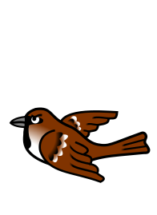

ULM
VfB Ulm
Kleinfeld
Analytics Center
Matchcenter
Gegner analysieren · Matchplan vorbereiten
Lineup Builder
Reihen planen · Chemie testen
Vergleichszentrum
Spieler & Saisons vergleichen
Hall of Fame
Rekorde · Legenden · Meilensteine
Alltime Spieler
Karrieren · Profile · Historie
Spielgemeinschaft mit Tübingen
21/22
22/23
23/24

VfB Ulm
24/25
25/26
26/27
-
Spiele
-
Scorer
-
Scorer-Punkte
Lexikon
created by Christian Loser